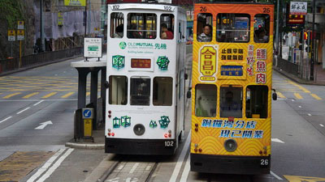

文字旅行
舒適徜徉香港島的速度-叮叮車
作者：XXX
日期：2017/6/28 FB：XXX藝想世界

I Love Hong Kong
來到香港怎麼能不搭乘『叮叮車』。
從1904年至今，
來往於港島北部的筲箕灣及堅尼地城之間另有環形支線來往跑馬地，港島的雙層電車已經成為全世界現存最龐大的電車車隊。
電車所發出的『叮叮』警示音，警告路上的行人和車子，就像是喇叭一樣，所以大家就稱它叫叮叮車。
港島在地人都愛搭電車，原因無他，服務時間從早上六點至凌晨12點，平均每250公尺一個電車站，六條主要路線幾乎東西橫貫整個香港島市區，且最初電車軌道都是在近海路面建造，因此電車纜線串連起來，恰好是港島的黃金地區， 從最早的隨招隨停，到有小小月台，
現在更有站名與編號，百年歲月讓叮叮車車廂內的座椅，窗框、扶手顯得古色古香。 電車都是雙層的，建議你坐在上層，隨著電車環繞港島地區，看一看繁華的街道，仍舊保持舊時香港特色的建築和街上忙碌擁擠的人群。
『所以我最喜歡搭電車』，作家張曼娟說，因為電車是極緩慢的，但緩慢恰好提供了觀察一座城市樣貌最好的速度』，特色建築和街上忙碌擁擠的人群，來到香港一定要記得來搭乘叮叮轉一轉港島，感受一下真正香港人的生活。